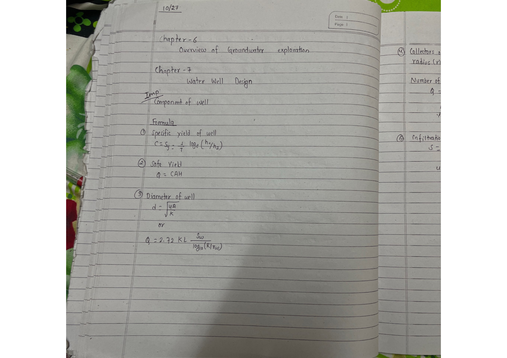
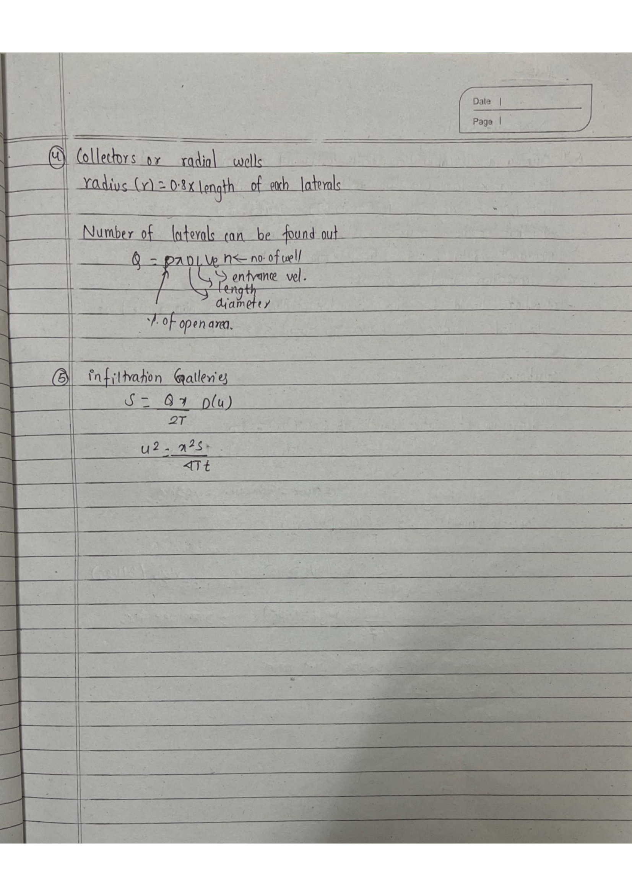
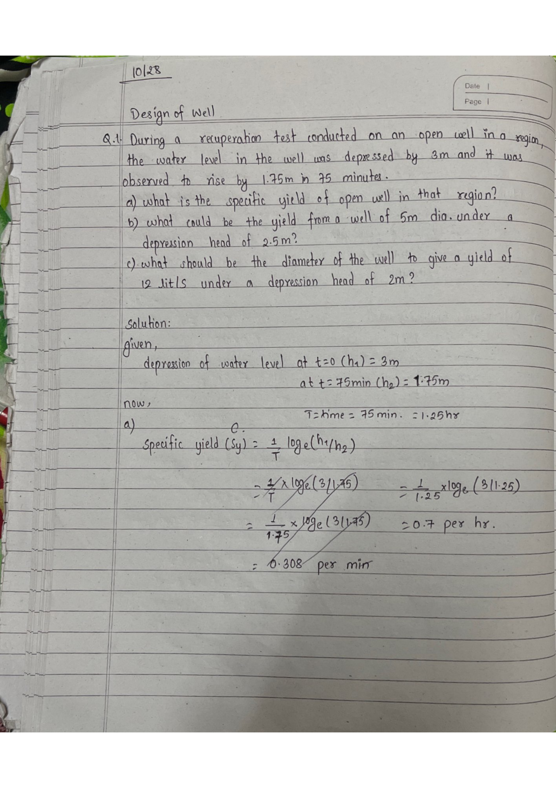
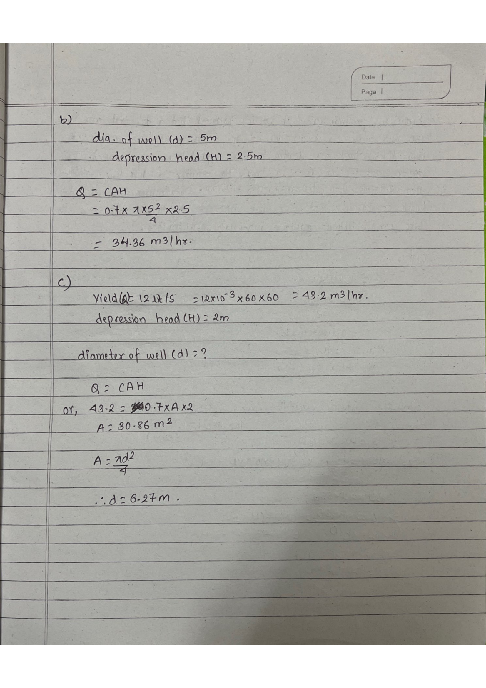
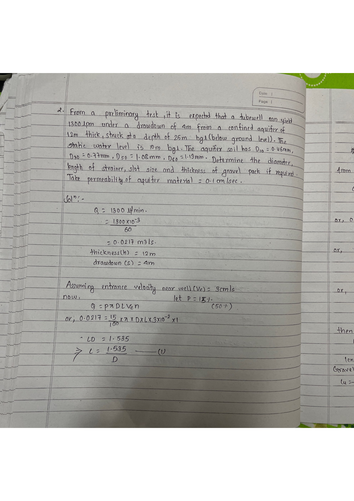
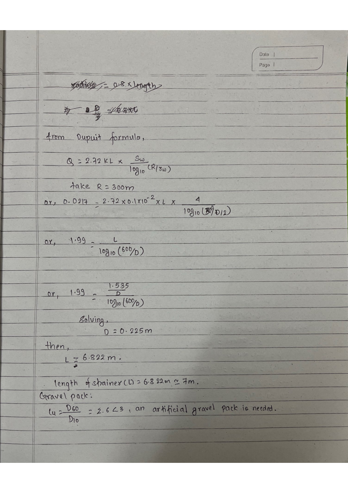
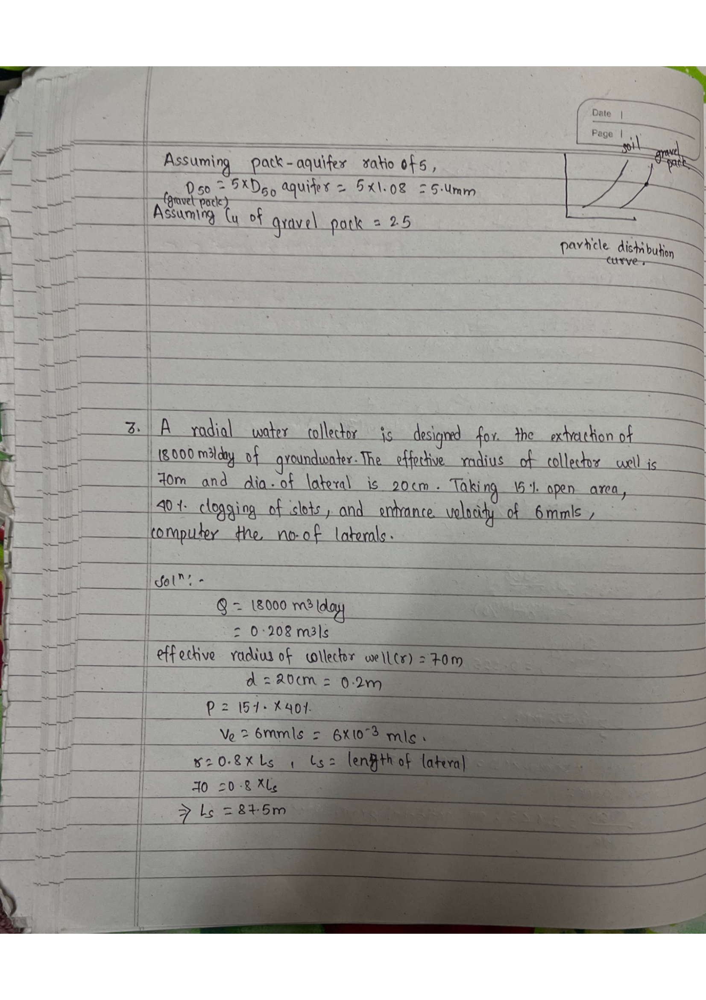
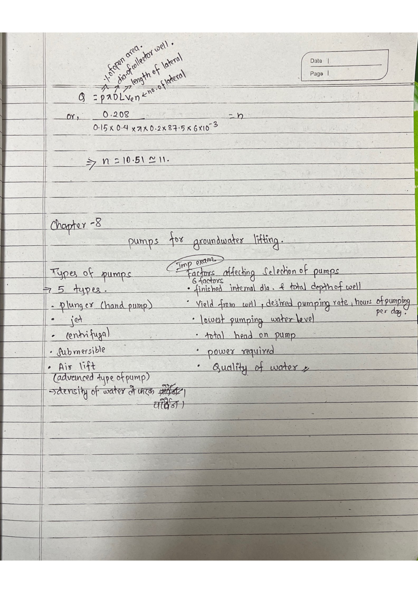

GWE Handwritten Notes

10/27
Imp: Component of well
① Specific yield of well (recuperation test):
② Safe Yield:
③ Diameter of well:
Dupuit formula:

④ Collectors or radial wells:
radius (r) = 0.8 × length of each lateral
where p = % open area, D = diameter, L = length, Ve = entrance velocity, n = no. of laterals
⑤ Infiltration Galleries:

Date: 10/28
Q. Water depressed 3m, rose 1.75m in 75 min. a) Sy? b) Yield from 5m dia. well, H=2.5m? c) Diameter for Q=12 l/s, H=2m?
Solution:
Step 1 — Identify h1 and h2 (depths below SWL):
T = 75 min = 75/60 = 1.25 hr
a) Specific yield of well:

b) Yield from well (d=5 m, H=2.5 m):
Step 2 — Apply yield formula Q = C · A · H:
c) Diameter for Q=12 l/s, H=2 m:
Step 3 — Rearrange for area then diameter:

Q. Q=1300 lpm, confined 12m thick at 25m BGL, SWL=10m, Sw=4m. D10=0.46mm, D30=0.77mm, D50=1.08mm, D60=1.19mm. K=0.1cm/s. Find diameter, strainer length, slot size, gravel pack.
Solution:
Step 1 — Convert units and establish design parameters:
Step 2 — From strainer intake formula Q = P·π·D·L·Ve :
⇒ D·L = 1.535 ⇒ L = 1.535/D …(1)

Step 3 — From Dupuit’s formula (R=300 m assumed):
Step 4 — Substitute L = 1.535/D from Eq.(1) and solve simultaneously:
Step 5 — Check if natural gravel pack or artificial needed:
Rule: If Cu < 3, aquifer is too uniform — needs artificial gravel pack to prevent sand entry.

Step 6 — Design the gravel pack:
Q. Q=18,000 m³/day, effective radius=70m, lateral dia.=20cm, 15% open area, 40% clogging, Ve=6mm/s. No. of laterals?
Solution:
Step 1 — Convert given data:
Step 2 — Find effective screen length (intake from inner 80% only):
Ls = Reff / 0.8 = 70/0.8 = 87.5 m per lateral

Step 3 — Compute number of laterals (accounting for 40% clogging):
Note: The factor (1−0.40) = 0.60 accounts for 40% clogging of the strainer open area.
(Important for exam)